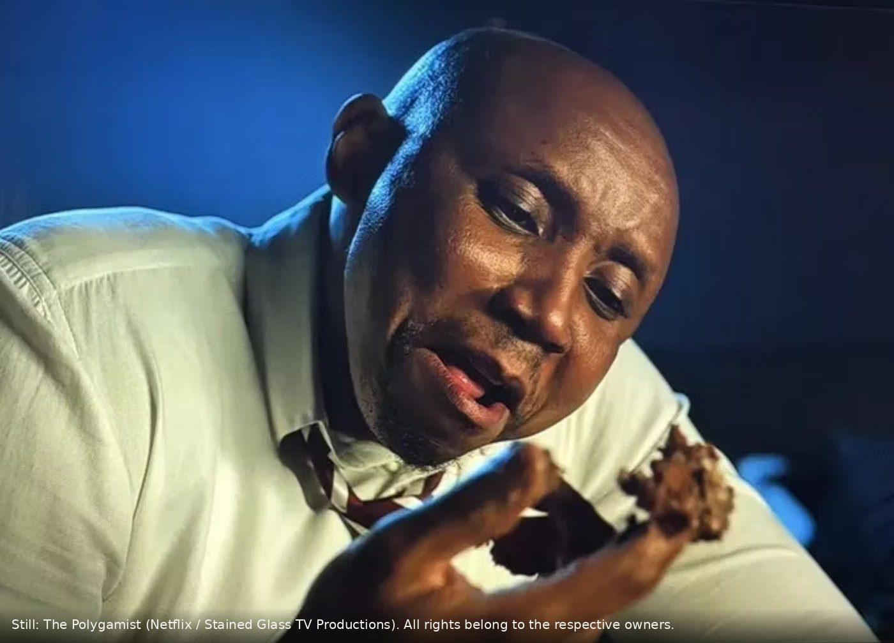

Still from The Polygamist. All rights belong to the respective owners (Netflix / Stained Glass TV Productions).
It hit number one on Netflix in South Africa within hours. Jonasi and Joyce dominated X. TikTok filled up overnight. No outdoor campaign did that. The people did.
The conversation did not start with a campaign. It started with a story.
The Polygamist premiered on 12 June 2026 and hit number one on Netflix South Africa within hours. Jonasi, Joyce, Matipa and Essie all trended on X at the same time. TikTok filled with reaction videos and breakdowns overnight. Lasizwe posted. Ratile Mabitsela shared a reaction that hinted at her own life. Black Coffee trended because viewers compared him to a fictional character. Netflix did not buy that conversation. They made something worth talking about, adapted from Sue Nyathi's novel, and South Africans did the rest.
Joyce Gomora is a case study, not just a storyline
Joyce Gomora is a social media personality. Her entire brand is a curated, perfect image. The moment the truth about her marriage hits the internet, that image collapses on the same platforms she used to build it. That is not just a storyline. That is a case study, and every brand that lives on a polished feed should sit with it. The tool that builds the image is the same tool that can dismantle it, in public, in an afternoon.
If you give people something worth talking about, they will talk about it
Strip away the noise and three things sit underneath it.
- Social is the billboard now.Nobody said they saw a billboard for The Polygamist. They said their group chat would not stop. That is where attention lives, and it is the same shift I keep pointing at when I argue that TikTok is not an entertainment app, it is a shop.
- The conversation happens whether your brand is there or not.South Africans were already talking before most brands had even seen the show. Being absent does not protect you. It just means you are not part of the story.
- This applies equally to B2B and B2C.The Polygamist did not have a narrow target audience. It had a cultural moment. Every brand, in every category, can create one, if the content is worth it.
Gone are the days of the billboard. The billboard ends up on social anyway.
Someone photographs it. Someone records it. Someone posts it. And social decides whether it matters. The brands that understand this are not choosing between traditional and digital. They are building content worth sharing on every platform, because that is where the real audience sits. This is exactly the gap I keep seeing when brands produce content nobody asked for: volume with no story underneath it. The Polygamist did not need a media plan to trend. It needed a story people could not stop talking about.
The same community logic explains why Amapiano went global with no brand strategy behind it. Culture does the distribution when the content earns it.
Your brand does not need a bigger billboard. It needs a better story. So, when last did your brand put out content that made someone tag a friend?